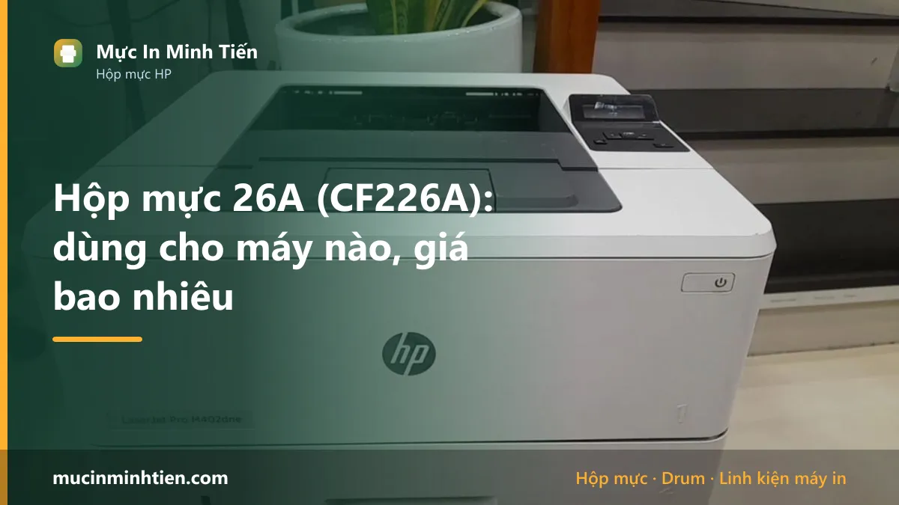
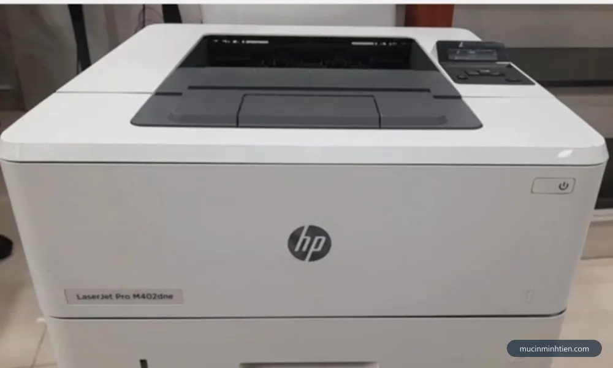
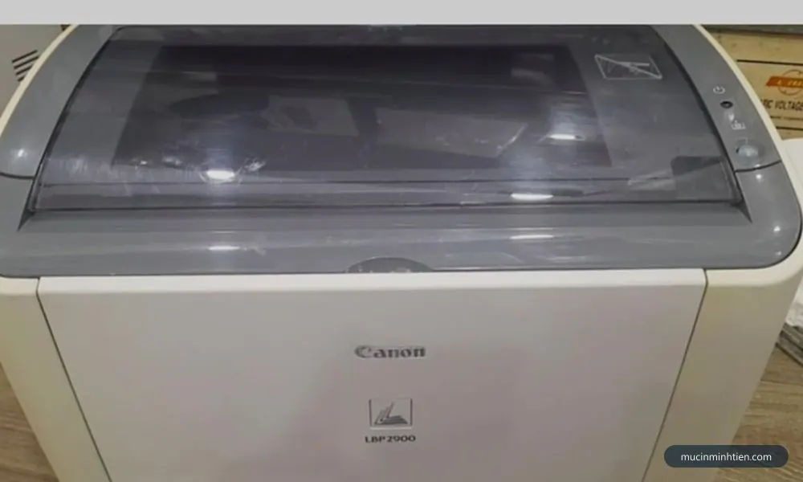
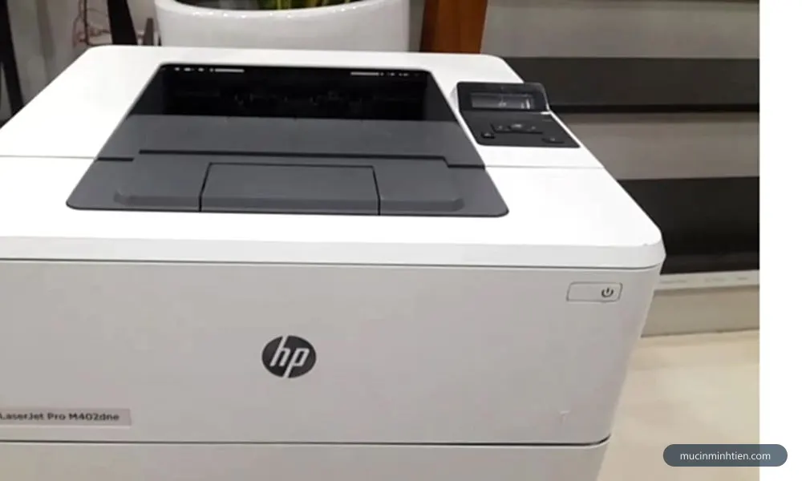
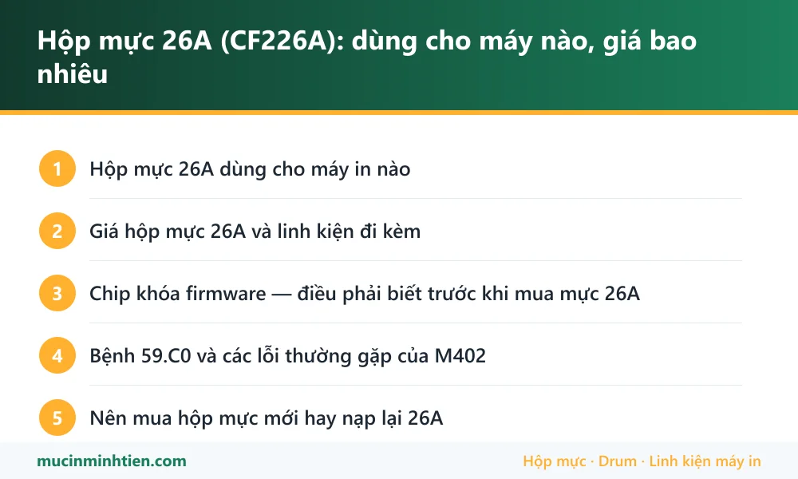

Hộp mực 26A (CF226A): dùng cho máy nào, giá bao nhiêu

Hộp mực 26A (mã HP CF226A) dùng cho HP LaserJet Pro M402d, M402dn, M402n, M402dw và MFP M426fdn, M426fdw. Một hộp đầy in được khoảng 3.100 trang. Đây là dòng có chip khóa theo firmware.
Hộp mực 26A dùng cho máy in nào
| Dòng máy | Model cụ thể | Ghi chú |
|---|---|---|
| HP LaserJet Pro | M402d, M402dn, M402n, M402dw, M402dne | Máy in văn phòng tốc độ cao, in hai mặt tự động ở bản dn/dw |
| HP LaserJet Pro MFP | M426fdn, M426fdw, M426dw | Bản đa năng có scan, copy, fax |
| Bản dung lượng cao | 26X (CF226X) — cùng máy, ~9.000 trang | Chọn 26X nếu văn phòng in nhiều để giảm chi phí mỗi trang |

Giá hộp mực 26A và linh kiện đi kèm
Bảng dưới là hàng đang có tại kho 77 Bắc Hải, Phường Diên Hồng, TP.HCM, giá tham khảo cho khách lẻ. Đây là giá thật trong bảng giá công khai, không phải giá quảng cáo.
| Sản phẩm | Nhóm | Giá tham khảo |
|---|---|---|
| Bao lụa dùng cho máy in HP 402D-226A - bao lụa 226 | Lô sấy, lô ép & linh kiện sấy | 80.000 đ |
| Lô ép HP 226A/402A - Lô ép 226 | Lô sấy, lô ép & linh kiện sấy | 130.000 đ |
| Combo 10 cặp (10 cái) Ron từ 49A/53A/05A/80A/226A - Ron từ 05 | Linh kiện khác | 10.000 đ |
| Cặp Bạc phíp 226A dùng cho máy HP M402 - Bạc phíp 226A | Linh kiện khác | 50.000 đ |
| Combo 5 Trục Sạc 226A / 402 - Combo 5 Sạc 226a | Linh kiện khác | 175.000 đ |
| Combo 2 Chip mực CF 226A cho HP Pro400M402 - Chip mực CF226A | Chip & Seal | 30.000 đ |
| Combo 5 con Chíp reset hộp mực 052 / 226A , cho CA LBP 212DW, 214dw, 215dw, 421DW, MF426dw, 424dw, 429dw - chip 052 | Chip & Seal | 75.000 đ |
| Combo 2 Chíp reset hộp mực 79A(CF279A ) dùng cho máy in HP LaserJet PRO M12 / M12A, HP LaserJet PRO MFP M26A / M26NW - 79A | Hộp mực & mực in máy in | 50.000 đ |
| Combo 5 Lò xo kéo dùng cho hộp mực 226A máy in HP Laser Jet pro M402n / M402d / M402dn / M402dw / M426 - Cartridge 226A - Lò xo 226A | Hộp mực & mực in máy in | 60.000 đ |
| Hộp Mực 226A/ 052 Dành Cho Máy In HP M402 - Canon LBP 212dw/ 214dw/ MF421dw/ MF424dw/ MF426dw/429dw - Mực 226A | Hộp mực & mực in máy in | 160.000 đ |
| Hộp Mực 26A/ 052 Dành Cho Máy In HP M402 - Canon LBP 214 - Mực 052 | Hộp mực & mực in máy in | 170.000 đ |
| Combo 3 Trống Drum 226A cho hộp mực máy in HP LaserJet Pro M402dn-M402dw-M426(Phôi Chính Hãng)và Trống drum HP 151A (W1510A), Pro 4003dn, M4003dw, MFP 4102fdn, 4103fdw - Drum 226 ( dấu sắc) | Drum / Trống máy in | 75.000 đ |
| Combo 5 Drum 226A Theo phôi chính hãng (Drum ES ) và Trống drum HP 151A (W1510A), Pro 4003dn, M4003dw, MFP 4102fdn, 4103fdw - Drum 226ES | Drum / Trống máy in | 150.000 đ |
| combo 5 Trục từ 226A - từ 226A | Trục từ | 130.000 đ |
| Load giấy , tách giấy , miếng đệm máy in 226A / 402 (K1) - Load giấy 402(K1) | Giấy in & Ruy băng | 50.000 đ |
| Quả đào, bánh xe cuốn giấy 226A M402/ M403/ M426/ M501/ M506/ M527 khay 1 - quả đào 402 k1 | Giấy in & Ruy băng | 50.000 đ |
| Con lăn ra giấy sử dụng cho máy in HP P1007/P1008/M1213/M1136/M1216/P1102W/P1106/P1107/P1108/M126A - 2938_110908833 | Giấy in & Ruy băng | 90.000 đ |
Không thấy mã cần tìm? Dùng công cụ tra cứu theo model máy hoặc xem bảng giá đầy đủ 773 mã.

Chip khóa firmware — điều phải biết trước khi mua mực 26A
Đây là điểm khác biệt lớn nhất giữa dòng M402/M426 và các máy HP đời cũ. HP đã nhiều lần phát hành bản cập nhật firmware chặn hộp mực không chính hãng trên dòng này. Máy đang chạy mực tương thích bình thường, sau khi tự động cập nhật firmware qua mạng thì báo lỗi cartridge và ngừng in.
Cách phòng tránh:
- Tắt tự động cập nhật firmware trong menu máy hoặc trong HP Smart, đặc biệt nếu bạn dùng mực tương thích.
- Không cắm máy vào mạng internet nếu không cần in qua mạng.
- Nếu dùng mực tương thích, chọn loại có chip đời mới đã cập nhật tương thích firmware hiện hành.
Nếu máy đã bị khóa sau cập nhật, thường phải hạ firmware về bản cũ hoặc chuyển sang dùng mực chính hãng. Đây là công việc cần kỹ thuật viên, không nên tự mò theo hướng dẫn trên mạng vì hạ firmware sai có thể làm hỏng bo mạch.
Bệnh 59.C0 và các lỗi thường gặp của M402
Dòng M402 và M426 có một số mã lỗi đặc trưng mà khách hay gặp:
- 59.C0 — lỗi motor truyền động hoặc bao lụa cụm sấy. Đây là bệnh phổ biến nhất của dòng này sau vài năm sử dụng, cần thay linh kiện chứ không phải thay mực.
- Cartridge error / Supply memory error — chip hộp mực không được nhận. Nguyên nhân thường là chip bẩn tiếp điểm, chip hỏng, hoặc firmware đã chặn.
- Nhòe bản in, chạm tay ra mực — bao lụa hoặc lô ép xuống cấp.
Bao lụa cho dòng 26A/M402 là mặt hàng có sẵn trong kho, thay được tại chỗ. Xem giá trong bảng bên dưới.

Nên mua hộp mực mới hay nạp lại 26A
Với 26A, bài toán khác hẳn các mã đời cũ. Phôi hộp mực nạp lại được và chi phí nạp thấp, nhưng chip và firmware là rào cản thật.
Nên nạp lại khi: máy đã tắt tự động cập nhật firmware, bạn chấp nhận thay chip kèm mỗi lần nạp, và máy in số lượng lớn nên chênh lệch chi phí đáng kể.
Nên dùng hộp chính hãng khi: máy nối mạng và không thể tắt cập nhật, hoặc máy dùng cho công việc quan trọng không chấp nhận rủi ro ngừng in giữa chừng.
Với văn phòng in nhiều, cân nhắc bản dung lượng cao 26X (khoảng 9.000 trang) — chi phí trên mỗi trang thấp hơn hẳn 26A dù giá hộp cao hơn.

Câu hỏi thường gặp về hộp mực 26A
Hộp mực 26A in được bao nhiêu trang?
Vì sao máy M402 đang dùng mực tương thích bỗng báo lỗi cartridge?
Lỗi 59.C0 trên HP M402 có phải do hộp mực không?
26A và 26X khác nhau thế nào?
Bài viết liên quan
- HP LaserJet Pro M402dn: lỗi thường gặp và chi phí vật tư
- Cách reset máy in HP và xử lý lỗi chấm than
- Phân biệt mực in chính hãng và mực trôi nổi
- Cách chọn mực in đúng máy, bền máy và tiết kiệm
- Hộp mực 16A: dùng cho máy nào, giá bao nhiêu
- Hộp mực 337: dùng cho máy nào, giá bao nhiêu
- Tra hộp mực và linh kiện theo model máy in
- Nạp mực máy in tận nơi TP.HCM từ 80.000đ